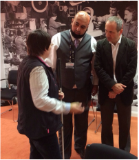

 Focus Group for the Visually Impaired taken at Beacon Blind Centre, for Waheed Rafiq's research into Computer Vision.
An I.T Consultant, who offers a variety of services from Building Networks, to writing mobile phones Applications.
In recent years Waheed has been certified in MCP Server 2012 and Windows 8 Workstation. Additionally, he has successfully
completed his Foundation Degree in Computer Science{FDSc} course and obtained a first class Hons degree. He has also
accomplished the Cisco CCNA during this his foundation year. After which he decided to do BSc(Hons) in Computer Science
from which he obtain in 2017 1st Hon's degree.
He has a vast amount of experience in programming and has taken on project works such as KEENs project with Birmingham City University.
Where his role was to Project Manage ERP system for Alwayse Engineering Ltd. During which he develop a database software that help the company
reduce their stock waste.
A talented research student in Computer Vision OpenCV , amongst his other skills he is able to write programs in C# , C/C++ , ASP.NET , VB.NET and HTML.